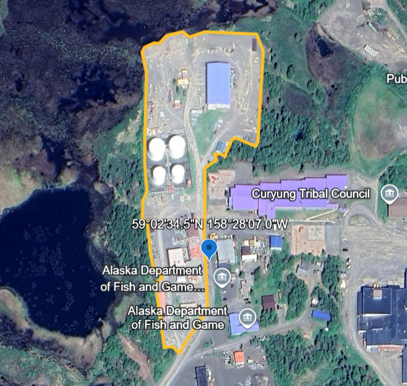

Procedure
Using a numbered list, describe your procedure (include pictures)
Step |
Description |
Image |
|---|---|---|
1 |
Collect, clean, and take samples of data from the EIA Power Plants database and the US Wind Turbine Database (USWTDB) |
|
2 |
Collect land area data in acres from Google Earth for power plants and the USWTDB viewer for wind turbines |
 |
3 |
(Wind turbines only) convert pixels to acres |
 |
4 |
Record subjective confidence level for each measurement |
|
5 |
Description for step 5 here |